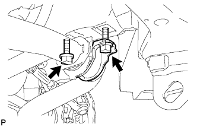
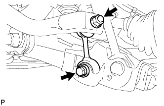
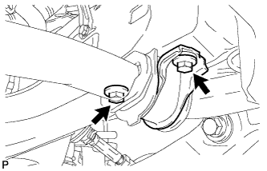
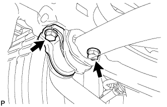

FRONT STABILIZER BAR (w/o KDSS) > REMOVAL |
| 1. REMOVE FRONT WHEEL |
| 2. REMOVE FRONT FENDER SPLASH SHIELD SUB-ASSEMBLY LH |
 |
Remove the 3 bolts and screw.
Turn the clip indicated by the arrow in the illustration to remove the fender splash shield.
| 3. REMOVE FRONT FENDER SPLASH SHIELD SUB-ASSEMBLY RH |
| 4. REMOVE NO. 1 ENGINE UNDER COVER SUB-ASSEMBLY |
 |
Remove the 10 bolts and No. 1 engine under cover.
| 5. LOOSEN NO. 1 FRONT STABILIZER BRACKET LH |
 |
Loosen the 2 bolts of the front stabilizer brackets.
| 6. LOOSEN NO. 1 FRONT STABILIZER BRACKET RH |
 |
Loosen the 2 bolts of the front stabilizer brackets.
| 7. REMOVE FRONT STABILIZER LINK ASSEMBLY LH |
 |
Remove the bolt, nut and stabilizer link.
| 8. REMOVE FRONT STABILIZER LINK ASSEMBLY RH |
 |
Remove the bolt, nut and stabilizer link.
| 9. REMOVE NO. 1 FRONT STABILIZER BRACKET LH |
 |
Remove the 2 bolts and stabilizer bracket from the front frame assembly.
| 10. REMOVE NO. 1 FRONT STABILIZER BRACKET RH |
 |
Remove the 2 bolts and stabilizer bracket from the front frame assembly.
| 11. REMOVE FRONT STABILIZER BAR |
Remove the front stabilizer bar from the frame assembly.
| 12. REMOVE NO. 1 FRONT STABILIZER BAR BUSH |
Remove the front stabilizer bar bush from the front stabilizer bar.